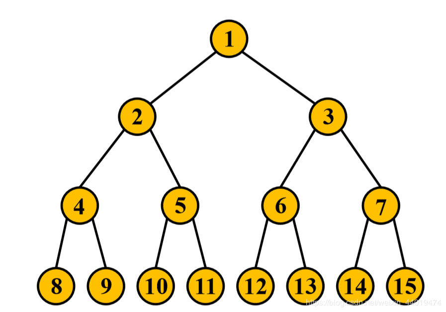

基本概念
G=<V(G),E(G),φ(G)>
φ(G): E->V×V的关联函数
边：
有向边：<i,j>
无向边：(i,j)
重边（平行边）：两结点间方向相同的若干条边
自环：。。。
对称边：可以等价为一条无向边的两条有向边
图的分类
有向图、无向图、混合图（一般进行转化）、多重图（含有重边）、简单图（没有重边、自环）并不简单
简单图的边数：E<=V(V-1)/2
取等时为完全图K8
稠密图、稀疏图没有
图的存储结构
邻接矩阵、邻接表
初始的INF最好不要使用0x7fffffff，不然一加就炸。
邻接矩阵的特点
- 空间复杂度：O(n^2)
- 可以O(1)查两个结点的关系
- 缺点：空间复杂度差，稀疏图效率低、不便于处理多重图的附加信息
邻接表的分类
写法：链表、vector、静态数组
邻接表的特点
- 空间复杂度：O(n+m)
- 可以高效的访问结点的所有邻接边（结点）
- 可以很好的处理重边
- 缺点：无法高效查询任意点对间的信息
vector 使用
1 | vector<vector<int> > mynode(5); //注意> >间有空格 |
图的遍历
图的深度优先搜索（DFS）
遍历：（带标记的深搜）实现联通块的搜索与计数：可达的就是一个联通图
一般会使用visited[maxn]数组，就可以避免来回搜索
1 |
|
度与欧拉图（见单独笔记）
几种特殊的图
树
- n个结点，n-1条边连通图
- 没有回路（环），任意两结点间有唯一路径
- 天然的递归结构
常见问题：
- 树上的动态规划（DP）
- 最近公共祖先（LCA)
- 树形转线形（满二叉树）

满二叉树
- 生成树
- 树上的分治